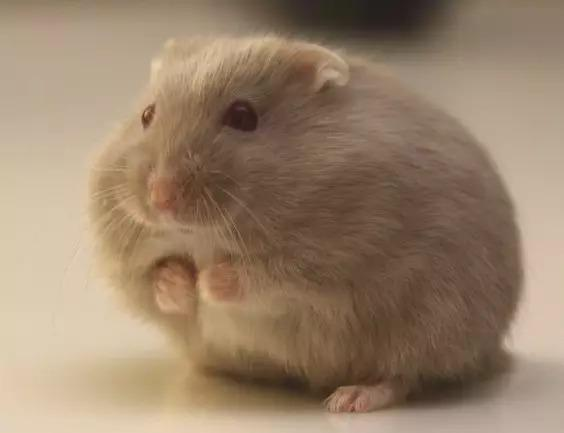

|

|
沙漠侏儒仓鼠又称罗伯罗夫仓鼠，学名Phodopus roborovskii，是所有的宠物仓鼠中体型最小的一种。
他们也是速度最快的。一般来说他们是宠物仓鼠中最长寿的，可以活约三到三年半左右。
其中一种体形最小，毛色带黄色或棕褐色，有着白胡子和白眉毛，圆耳朵，外貌像老爷爷，所以俗称叫老公公。
它们不适合喜欢逗弄宠物仓鼠的人士。体型很小可以轻易钻出笼子的间隙，所以必须慎重的考虑笼子的选择。
因为他们的体型和速度，它们最适合偏好观察宠物更甚于跟他们玩的人士。
|